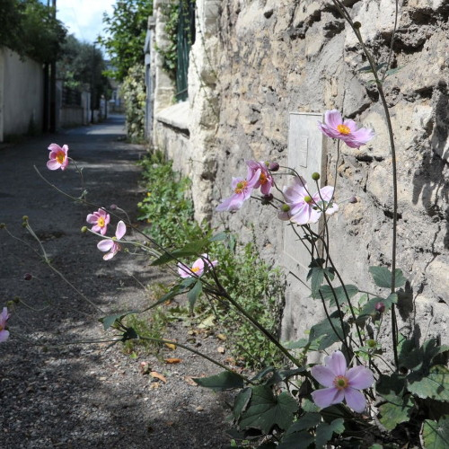

Jardinez en bas de chez vous pour des rues plus belles, plus vivantes, plus natures
Vous voulez participer à l'opération
« J'adopte un pied d'arbre, un pied de mur » ?
Besoin de nature en ville ?
Ça tombe bien : jardiner dans les rues, c’est permis à Malakoff !
Dans le cadre du « plan biodiversité », la Ville lance l’opération « J'adopte un pied d'arbre, un pied de mur » qui permet de planter dans l’espace public des plantes et fleurs.

Envie de jardinage ?
Pour participer, il suffit de faire une demande à la mairie et de s’engager à respecter certaines règles.
Pas la main verte ?
La ferme urbaine vous conseille et vous accompagne, toute l'année.
Des idées d'espèces végétales, contribuant à la biodiversité urbaine et utiles pour les pollinisateurs, vous seront proposées. Et des graines, bulbes ou plantes vous seront proposés pour débuter !